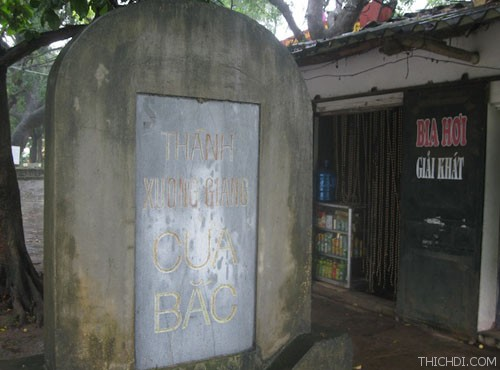
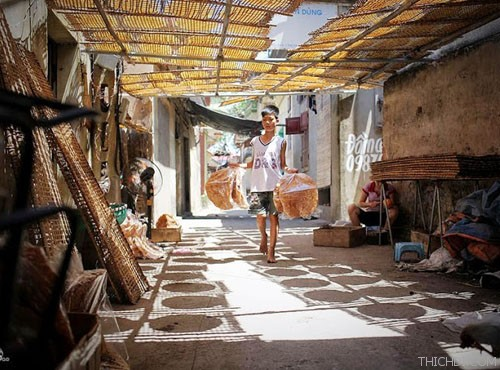
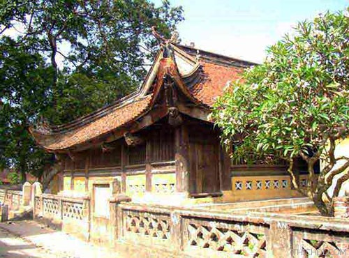
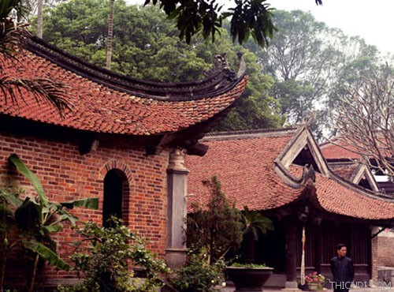
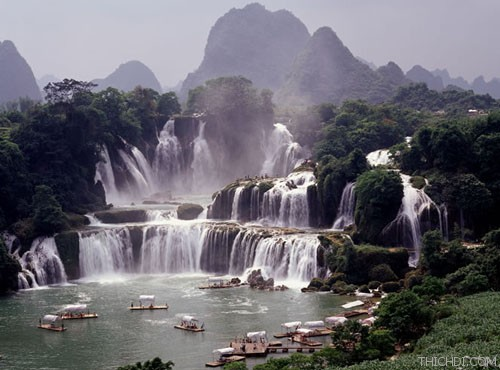
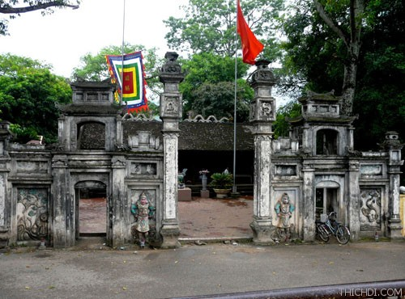
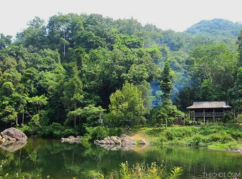
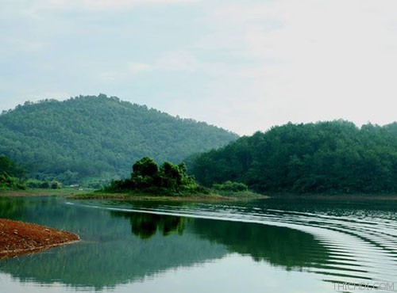
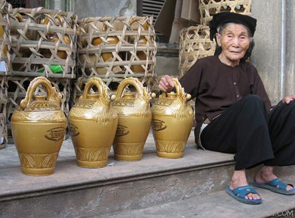
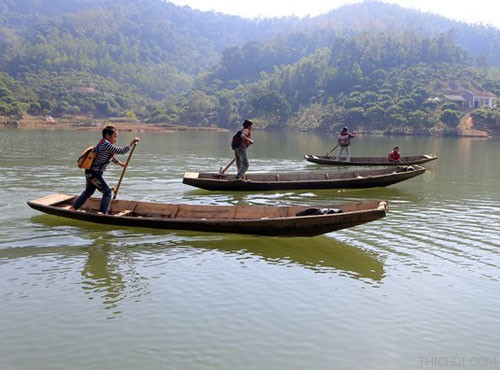

1. Thành cổ Xương Giang
Thành cổ Xương Giang thuộc địa phận xã Xương Giang, thành phố Bắc Giang, tỉnh Bắc Giang. Vào năm 1407, giặc Minh cho đắp thành. Do sự tác động của thời gian, lịch sử và con người, ngôi thành cổ hiện không còn được nguyên vẹn mà chỉ còn lại những dấu tích. Các dấu tích đó có hình chữ nhật với độ rộng 27ha, gồm có 4 cửa và được bao quanh bởi hào nước rộng lớn.
Khi đến với thành cổ Xương Giang, du khách sẽ nhận ra những dấu ấn riêng biệt của ngôi thành như tấm bia đá xanh nguyên vẹn, trên trán bia có đề các chữ Hán “Xương Giang cổ thành bi ký” (bia ghi về thành cổ Xương Giang) ở góc thành Tây Bắc…

2. Làng Thổ Hà
Thổ Hà là tên gọi của một làng nghề có ba mặt là sông thuộc xã Vân Hà. Đây là ngôi làng cổ thuần Việt với cây đa, có bến nước, sân đình cùng những nếp nhà cổ nằm sâu trong các ngõ hẻm. Điểm khác biệt nhất của làng Thổ Hà so với các làng quê đặc trưng của Bắc Bộ là người dân nơi đây không sống bằng nghề nông mà sống chính bằng nghề thủ công và buôn bán nhỏ. Trước năm 1960 làng Thổ Hà nổi tiếng về nghề làm gốm, nhưng từ 1990 trở lại đây nổi tiếng về nghề làm bánh đa nem và mỳ gạo.

3. Đình Thổ Hà
Đình Thổ Hà là ngôi đình nổi tiếng của xứ Kinh Bắc thờ Thân Cảnh Phúc, một vị tướng nhà Lý đã có công lớn trong kháng chiến chống quân Tống. Ngôi đình là công trình kiến trúc có quy mô trên khu đất rộng 3.000 m² được xây dựng vào năm 1685 thời vua Lê Chính Hòa năm thứ 7.
Du khách khi đến đây sẽ được ngắm cảnh trên bến dưới thuyền của dòng sông Cầu, thăm đình làng với các cây đa cổ thụ, thăm những ngôi nhà cổ trong làng, cùng những ngõ xóm hun hút mang vẻ đẹp cổ kính, thăm lò sản xuất gốm cùng các gia đình sản xuất bánh đa nem, mỳ gạo và các gia đình nấu rượu gạo.

4. Chùa Đức La
Chùa Đức La còn có tên gọi khác là chùa Vĩnh Nghiêm nằm trên một quả đồi thấp, sau lưng là dãy núi Cô Tiên ở xã Trí Yên, huyện Yên Dũng, tỉnh Bắc Giang. Đây là một trung tâm Phật giáo từ thời Trần và thuộc thiền phái Trúc Lâm. Chùa có quy mô lớn, được xây dựng trên mảnh đất khoảng 1 ha, có lũy tre dày đặc bao quanh.

5. Khu di tích Suối Mỡ
Đến với khu di tích,du khách sẽ cảm nhận được không gian thoáng đãng của núi rừng, với vẻ thanh bình của con đường uốn lượn men theo dòng suối, cùng những mái nhà ẩn hiện trong tán cây của núi non hùng vĩ. Đồng thời, du khách còn có thể khám phá lối đi khác được tạo ra bởi nhiều vách đá.

6. Đền Suối Mỡ
Đến suối Mỡ, du khách như lạc vào cõi bồng lai tiên cảnh với những ngôi đền, ngôi chùa nằm tĩnh trên những mỏm núi. Nổi bật nhất chính là đền Suối Mỡ, gồm có đền Hạ, Trung, Thượng nằm dọc theo dòng suối Mỡ.

7. Rừng nguyên sinh Khe Rỗ
Rừng nguyên sinh Khe Rỗ thuộc xã An Lạc, huyện Sơn Động, tỉnh Bắc Giang là khu rừng nguyên sinh tiêu biểu cho vùng Đông Bắc của Việt Nam.
Rừng Khe Rỗ có hệ thống động thực vật rất phong phú và là khu rừng cấm nguyên sinh vẫn còn giữ được vẻ hoang sơ thích hợp đối với những du khách thích khám phá, nghiên cứu. Đặc biệt, nơi này còn sở hữu hai con suối lớn rất đẹp. Đó là suối nước Vàng quanh năm như mật ong, có những viên đá nổi lên với đủ màu sắc, kích cỡ; và Khe Đin chảy dài với những đoạn thác 3-4 tầng, mỗi tầng cao khoảng 30-40m.

8. Khu du lịch Khuôn Thần
Khu du lịch Khuôn Thần nằm tại địa phận huyện Lục Ngạn, tỉnh Bắc Giang với 2 điểm nhấn là hồ và rừng Khuôn Thần. Hồ Khuôn Thần rộng đến 240ha, lòng hồ có tới 5 đảo nhỏ được trồng thông xanh có tuổi từ 15-20 năm thích hợp cho việc dạo chơi trên hồ, hay câu cá…Rừng Khuôn Thần rộng gần 700ha, trong đó diện tích rừng tự nhiên là 300ha, còn rừng thông là 400ha.
Xung quanh khu du lịch Khuôn Thần là các vườn cây đặc sản như vải Thái Lan, vải thiều, hồng, na… Nơi đây là điểm du lịch đẹp của Bắc Giang mà du khách không thể bỏ qua.

9. Làng rượu Vân Hà
Vân Hà là một địa danh nổi tiếng thuộc huyện Việt Yên, tỉnh Bắc Giang. Nơi đây lừng danh với đặc sản rượu làng Vân, một thứ rượu đặc biệt thơm ngon. Người làng Vân nói riêng và người Bắc Giang nói chung luôn tự hào với nghề nấu rượu làng Vân bởi trải qua mấy trăm năm, dưới các triều đại phong kiến thì thứ rượu này từng là lễ vật tiến vua và được sử dụng thường xuyên trong những yến tiệc chốn cung đình.

10. Hồ Cấm Sơn
Hồ Cấm Sơn nằm ở độ cao khoảng 300m so với mực nước biển, không những hồ có nguồn tài nguyên thiên nhiên phong phú, mà còn chứa đựng kho tàng văn hóa đặc sắc của cộng đồng các dân tộc Tày, Nùng, Dao, và Sán Chay.

Đến với nơi đây, du khách sẽ có dịp chiêm ngưỡng những nếp nhà sàn vương khói lam chiều ẩn hiện sau những triền đồi, rừng cây; được nghe làn điệu Sli, Shoong hao đằm thắm; được thưởng thức lễ hội xuống đồng, cầu mùa, mừng năm mới, mừng nhà mới độc đáo… Hơn thế, du khách còn được hòa mình vào không gian vô cùng lãng mạn trên bến dưới thuyền – một nét văn hóa đặc trưng của vùng Cấm Sơn.
Thu Vân